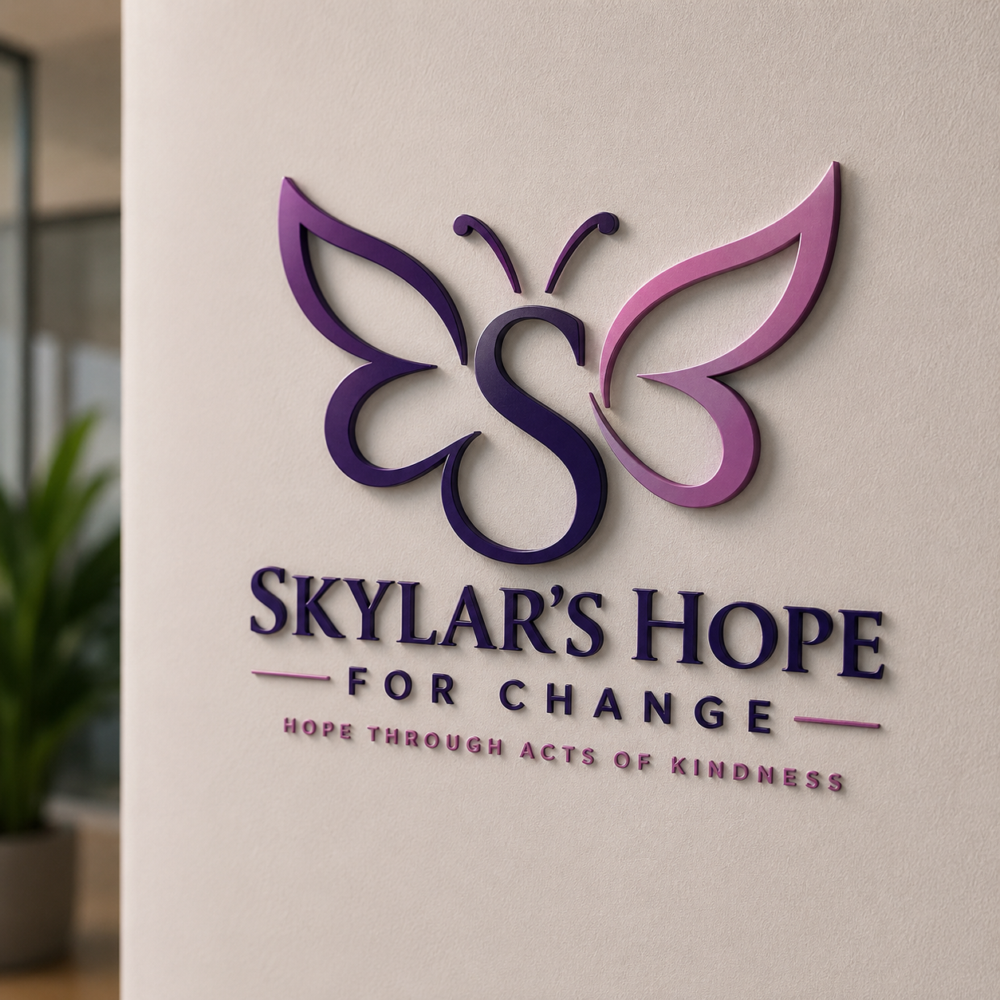
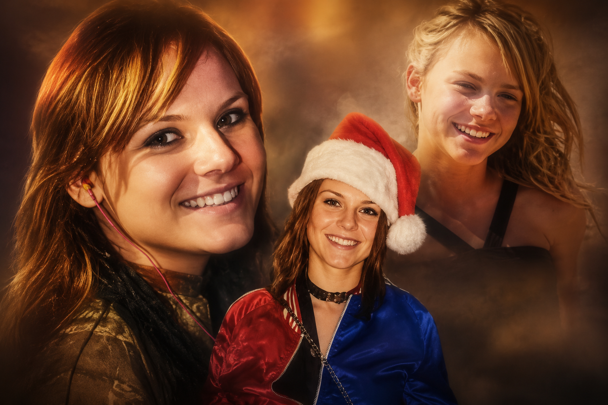

Mobile Dental & Medical Outreach
Mobile care brings dental and medical services directly to homeless encampments, sober houses, and underserved Phoenix neighborhoods.
Skylar's Hope For Change is a Phoenix-based nonprofit initiative created to bring mobile care, recovery support, housing pathways, and acts of kindness directly to people impacted by addiction, homelessness, trauma, and despair.

Skylar's Hope For Change exists to meet people where they are — in recovery centers, underserved neighborhoods, homeless encampments, safe zones, and communities where help is often out of reach.
Through mobile health outreach, recovery support, transitional housing, and community partnerships, the organization is building practical pathways back to dignity, stability, and hope.
“We don't wait for people to walk through a door that may not be accessible to them. We bring the door to them — wherever they are, whatever they're carrying.”— John Archer, Founder

In 2017, founder John Archer lost his daughter Skylar to a fentanyl-heroin overdose. That loss became the foundation for a larger mission: to fight back against addiction, homelessness, and hopelessness with action, compassion, and real community support.
Skylar's Hope For Change carries her name as a promise — that her passing will not be the end of the story, but the beginning of something that gives others a chance to write their own.
Six core areas of service designed to meet real needs with direct, practical action.
Mobile care brings dental and medical services directly to homeless encampments, sober houses, and underserved Phoenix neighborhoods.
Connecting people in recovery with resources, community, counseling partnerships, and pathways toward stable long-term sobriety.
Supporting safe and sober living environments that open doors to stable housing for people rebuilding their lives.
Dedicated outreach connecting veterans facing homelessness, PTSD, addiction, and mental-health challenges with specialized resources.
Direct engagement delivering supplies, care, resource connections, and human connection where conventional services often do not reach.
Building alliances with churches, businesses, mental-health providers, medical professionals, and nonprofit partners across Arizona.
Every dollar moves this mission from vision to action — buses on the road, supplies in hand, housing doors opened, and people given another real chance.
Fuel & insurance for mobile outreach vehicles
Dental & medical supplies for outreach
Safe housing startup costs
Recovery resource coordination & case support
Volunteer outreach training & coordination
Veteran housing support & PTSD resources
Every donation helps move this mission from vision to action.